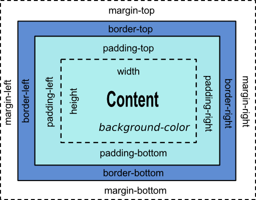
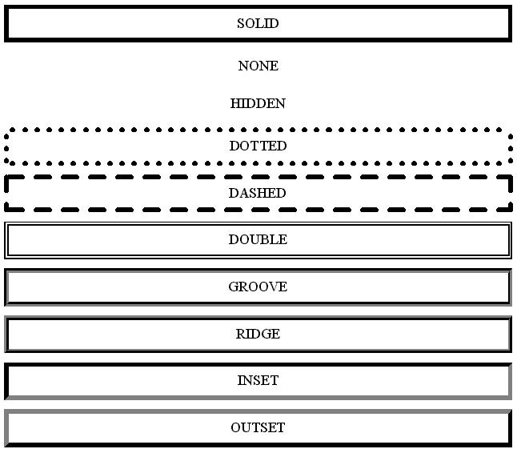

The CSS box model identifies the four parts of the HTML element that can be styled. Let's consider each part.

Each HTML element has a content box. This is the part of the element that contains the content. The content might be text, an image, or nested HTML elements. The content box is just big enough to fit the content. You can change the size of the content box by using the CSS width and height properties.
Around the content is the padding, border, and margin. The size of each of these can be set using CSS.
| Box Part | CSS Properties | Link to Reference |
|---|---|---|
| Content | width height |
none |
| Padding | padding padding-top padding-right padding-bottom padding-left |
w3schools CSS Padding |
| Border | border border-style border-width border-color |
w3schools CSS Borders |
| Margin | margin margin-top margin-right margin-bottom margin-left |
w3schools CSS Margins |
We will use this paragraph to demonstrate how the parts of the box model work when the content is text. By adding the different CSS properties we can see the effect they have.
